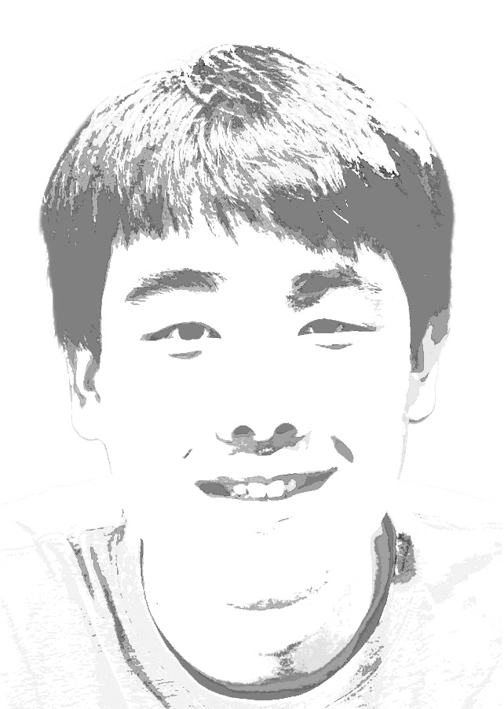

What if everyone could enjoy a dignified retirement without the fear of Alzheimer’s? What if cancer were as easy to cure as a papercut? What if all children could play on a level playing field without disabilities posing obstacles? These are the questions that motivate me.
My name is Ethan, and I research ways to leverage machine learning in medicine. At the heart of my work is a mission to mitigate the human suffering caused by disease.
As an intern at UCSF’s radiology department, I worked on segmenting vessels from CT scans to provide insight on ideal device dimensions for the Interventional Radiology Research Laboratory’s ChemoFilter project.
As an intern at the Dartmouth Cancer Center, I developed a cytology foundation model to improve downstream tasks like classifying images of cells as benign or malignant.